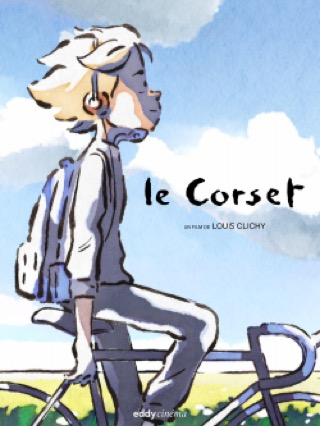

Le Corset
From the festival
Play Trailer Christophe is just on the cusp of adolescence, working every day on his family’s financially embattled farm. There is love between him and his distant father, his tougher older brother, pixiesh baby sister, and long-suffering mother, but when balance issues require that Christophe wear an iron corset 24/7, his life goes into a tailspin and makes him an outcast. Two people come to his rescue: a middle-aged church musician who encourages him to play the organ, and a Huck Finn-like female schoolmate who teaches him to take risks and gives him his first hilariously unexpected kiss. Director Louis Clichy, an animator on Wall-E and Up , employs delicate hand-drawn watercolor imagery and casts his son Gary as Chrisophe’s voice, in this feature co-written with Frank Salome. With Iron Boy , Clichy delivers a tender, funny rite-of-passage story that honestly confronts the distress that every adolescent endures. —Larry Gross
- Directed by
- Louis Clichy
- Country
- France / Belgium
- Year
- 2026
- Running time
- 89 minutes
- Language
- French
- Premiere
- Bay Area Premiere
- With
- Alexandre Astier, Aurélie Vassort, Bruce Moulin, Dimitri Colas, Gary Clichy, Jean-Pascal Zadi
Source: Festival website programme (MVFF49): Wayback Machine copy; Festival film page: Wayback Machine copy; Poster from English Wikipedia